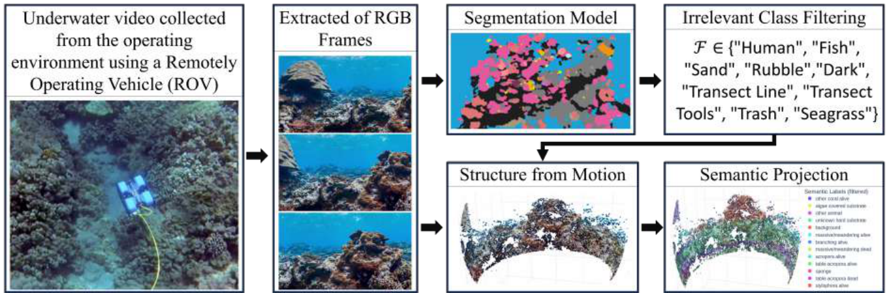

Neuromorphic Computing and Engineering · 2026
snnTrans-DHZ
A spiking transformer that estimates background light and restores underwater images from RGB and LAB inputs.

Spiking neural networks for underwater perception and localization, semantic 3D mapping for ecological monitoring, and visual–haptic teleoperation.
Neuromorphic Computing and Engineering · 2026
A spiking transformer that estimates background light and restores underwater images from RGB and LAB inputs.
IEEE Journal of Oceanic Engineering · 2026
A hybrid visual–inertial odometry model that combines convolutional visual features with spiking temporal processing for underwater pose estimation.

arXiv preprint · 2025
A convolutional spiking encoder–decoder for underwater image enhancement. The study examines how neuron settings and dataset choice affect inference.

IEEE MetroSea · 2026
Semantic 3D mapping for ecological monitoring, including the ReefSight3D project.

Khalifa University–Qatar University Joint Research Program
Visual and haptic interfaces for remote robot operation, inspection, and physical intervention.